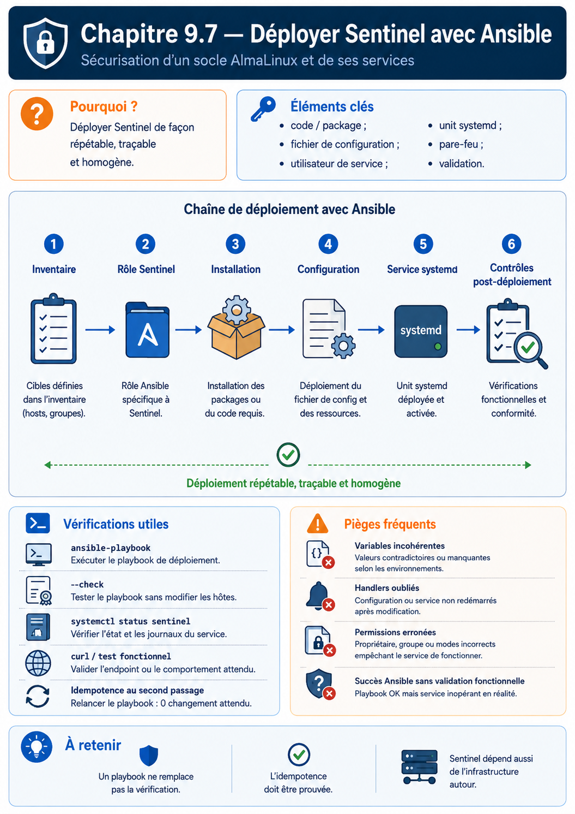

Chapitre 9.7 — Déployer Sentinel avec Ansible
Campagne 9 — Déploiement avec Ansible
« Un déploiement est terminé lorsque le service attendu fonctionne, refuse ce qu'il doit refuser et converge au second passage. »
Vous êtes ici
Partie II — Industrialiser la sécurité
Campagne 9 — Déploiement avec Ansible
9.1 Architecture Ansible
9.2 Composants et idempotence
9.3 Inventaires
9.4 Premiers playbooks
9.5 Variables et templates
9.6 Rôles Ansible
► 9.7 Déploiement de Sentinel
9.8 Intégration à FreeIPA
9.9 Industrialisation du projet
9.10 Mission de déploiement
Objectifs pédagogiques
À la fin de ce chapitre, vous serez capable de :
- déployer le checkpoint Sentinel
0.6.0depuis le projet Ansible ; - gérer compte, arborescence, configuration et unité systemd ;
- préserver permissions et contextes SELinux ;
- valider version, configuration, service et fonction ;
- prouver l'idempotence et diagnostiquer un déploiement incomplet.
Pourquoi ce chapitre existe
Un service active ne prouve pas que la bonne version tourne, que la configuration a été acceptée ou que /ready répond. Inversement, copier le code sans créer le compte et les permissions attendues contourne les protections des campagnes précédentes.
Le rôle sentinel automatise l'état complet sans modifier le code Python. La campagne 10 remplacera cette installation depuis les sources par un paquet RPM ; cette étape rend justement visible ce que le futur paquet devra prendre en charge.
Contrat du rôle
Le rôle garantit :
| Objet | État attendu |
|---|---|
| version | checkpoint 0.6.0 explicitement sélectionné |
| compte | utilisateur système sentinel, sans shell interactif |
| code | /opt/sentinel/src, non modifiable par le service |
| configuration | /etc/sentinel/sentinel.conf, validée avant remplacement |
| données | /var/lib/sentinel, accessible au compte de service |
| unité | /etc/systemd/system/sentinel.service |
| service | activé et démarré |
| preuve | version, --check-config, état systemd et healthcheck |
Le rôle ne crée pas de CA, ne transporte pas de clé privée et ne désactive ni SELinux ni Firewalld.
Variables essentielles
sentinel_version: "0.6.0"
sentinel_source_checkpoint: >-
{{ playbook_dir }}/../../sentinel-app/checkpoints/{{ sentinel_version }}
sentinel_service_user: sentinel
sentinel_install_root: /opt/sentinel
sentinel_config_path: /etc/sentinel/sentinel.conf
sentinel_state_directory: /var/lib/sentinel
sentinel_tls_enabled: false
TLS reste désactivé pendant le premier déploiement isolé. Le chapitre 9.8 enrôle l'hôte, obtient les certificats, puis active mTLS. Cette progression évite de demander à --check-config de lire des fichiers qui n'existent pas encore.
Valider avant de modifier
roles/sentinel/tasks/validate.yml :
---
- name: Valider les entrées du rôle Sentinel
ansible.builtin.assert:
that:
- sentinel_version == "0.6.0"
- sentinel_source_checkpoint is directory
- sentinel_listen_port | int >= 1024
- sentinel_listen_port | int <= 65535
- not sentinel_tls_enabled or sentinel_allowed_dns_names | length > 0
fail_msg: "Le contrat du rôle Sentinel n'est pas satisfait."
- name: Valider la plateforme administrée
ansible.builtin.assert:
that:
- ansible_facts.os_family == "RedHat"
- ansible_facts.distribution_major_version | int >= 9
La première assertion vérifie les entrées et le checkpoint côté contrôleur. La seconde utilise les faits de l'hôte. Elles précèdent toute mutation.
Installer le moteur, le compte et le code
---
- name: Installer les dépendances d'exécution
ansible.builtin.package:
name:
- python3
state: present
- name: Créer le compte système Sentinel
ansible.builtin.user:
name: "{{ sentinel_service_user }}"
system: true
create_home: false
shell: /sbin/nologin
state: present
- name: Créer les répertoires Sentinel
ansible.builtin.file:
path: "{{ item.path }}"
state: directory
owner: "{{ item.owner }}"
group: "{{ item.group }}"
mode: "{{ item.mode }}"
loop:
- path: "{{ sentinel_install_root }}/src"
owner: root
group: "{{ sentinel_service_user }}"
mode: "0750"
- path: /etc/sentinel
owner: root
group: "{{ sentinel_service_user }}"
mode: "0750"
- path: "{{ sentinel_state_directory }}"
owner: "{{ sentinel_service_user }}"
group: "{{ sentinel_service_user }}"
mode: "0750"
- name: Déployer les sources Sentinel
ansible.builtin.copy:
src: "{{ sentinel_source_checkpoint }}/src/"
dest: "{{ sentinel_install_root }}/src/"
owner: root
group: "{{ sentinel_service_user }}"
mode: "0640"
notify: Redémarrer Sentinel
Le processus lit le code mais ne peut pas le modifier. Le mode 0640 suffit puisque Python ouvre le fichier ; le bit exécutable n'est pas nécessaire lorsque l'unité appelle explicitement /usr/bin/python3.
Le déploiement de sources est volontairement pédagogique. Il duplique des fichiers et ne fournit pas les transactions, la base de paquets ni les scripts de migration d'un RPM.
Générer la configuration
La tâche du chapitre 9.5 rend puis valide le template :
- name: Déployer la configuration Sentinel
ansible.builtin.template:
src: sentinel.conf.j2
dest: "{{ sentinel_config_path }}"
owner: root
group: "{{ sentinel_service_user }}"
mode: "0640"
validate: >-
/usr/bin/python3 {{ sentinel_install_root }}/src/sentinel.py
--config %s --check-config
notify: Redémarrer Sentinel
Ajoutez backup: true seulement si la procédure explique la rétention et protège les anciennes configurations. Une sauvegarde automatique dans /etc n'est pas un plan de retour arrière complet.
Déployer une unité systemd durcie
roles/sentinel/templates/sentinel.service.j2 :
[Unit]
Description=Sentinel {{ sentinel_version }}
After=network-online.target
Wants=network-online.target
[Service]
Type=simple
User={{ sentinel_service_user }}
Group={{ sentinel_service_user }}
ExecStart=/usr/bin/python3 {{ sentinel_install_root }}/src/sentinel.py --config {{ sentinel_config_path }} serve
ExecStartPre=/usr/bin/python3 {{ sentinel_install_root }}/src/sentinel.py --config {{ sentinel_config_path }} --check-config
Restart=on-failure
RestartSec=5s
NoNewPrivileges=true
PrivateTmp=true
ProtectSystem=strict
ProtectHome=true
ReadWritePaths={{ sentinel_state_directory }}
[Install]
WantedBy=multi-user.target
Le template conserve les protections de la campagne 5. Il ne remplace pas la politique SELinux de la campagne 6 : DAC, sandbox systemd et MAC s'additionnent.
- name: Déployer l'unité Sentinel
ansible.builtin.template:
src: sentinel.service.j2
dest: /etc/systemd/system/sentinel.service
owner: root
group: root
mode: "0644"
notify:
- Recharger systemd
- Redémarrer Sentinel
Restaurer les contextes SELinux
Ansible ne doit pas attribuer au hasard des contextes avec chcon. La règle persistante, créée lors de la campagne 6, reste la source de vérité. Après création des chemins :
- name: Restaurer les contextes SELinux attendus
ansible.builtin.command:
argv:
- restorecon
- -RF
- /opt/sentinel
- /etc/sentinel
- /var/lib/sentinel
changed_when: false
restorecon peut modifier des contextes, mais sa sortie n'offre pas ici une détection simple et stable. Le rôle le traite comme une réconciliation ; une vérification séparée avec matchpathcon -V produit la preuve.
Activer le service avec des handlers précis
handlers:
- name: Recharger systemd
ansible.builtin.systemd_service:
daemon_reload: true
- name: Redémarrer Sentinel
ansible.builtin.systemd_service:
name: sentinel.service
state: restarted
La tâche d'état courant ne force aucun redémarrage :
- name: Activer et démarrer Sentinel
ansible.builtin.systemd_service:
name: sentinel.service
enabled: true
state: started
Si un template a changé, le handler redémarre. Sinon, state: started laisse le processus en place.
Vérifier le produit et sa fonction
Une vérification progressive localise mieux la panne :
- name: Vérifier la version Sentinel
ansible.builtin.command:
argv:
- /usr/bin/python3
- "{{ sentinel_install_root }}/src/sentinel.py"
- --version
register: version_result
changed_when: false
- name: Vérifier la configuration installée
ansible.builtin.command:
argv:
- /usr/bin/python3
- "{{ sentinel_install_root }}/src/sentinel.py"
- --config
- "{{ sentinel_config_path }}"
- --check-config
changed_when: false
- name: Vérifier que systemd voit le service actif
ansible.builtin.command: systemctl is-active sentinel.service
changed_when: false
- name: Exécuter le healthcheck Sentinel
ansible.builtin.command:
argv:
- /usr/bin/python3
- "{{ sentinel_install_root }}/src/sentinel.py"
- --config
- "{{ sentinel_config_path }}"
- --healthcheck
changed_when: false
Après les commandes, des assertions contrôlent la version et les codes de retour. Le healthcheck exerce l'interface prévue par le produit, contrairement à une simple présence de processus.
Ordre de convergence
Chaque étape prépare la suivante. Une vérification finale ne compense pas une dépendance implicite dans l'ordre.
Diagnostic d'un échec
| Symptôme Ansible | Première preuve |
|---|---|
| template refusé | sortie de --check-config et fichier temporaire expurgé |
| handler échoue | systemctl status et journalctl -u sentinel |
| service actif, healthcheck en échec | configuration, certificats, /ready, journaux applicatifs |
| AVC SELinux | ausearch -m AVC -ts recent -c sentinel -i |
| second passage change encore | tâche changed, diff, données instables |
N'ajoutez pas failed_when: false à la vérification. Utilisez un bloc rescue pour collecter le diagnostic puis faites échouer le play avec le contexte utile.
Jalon Sentinel — infrastructure 0.6.0
État de départ
Le code 0.6.0 et ses sept tests existent depuis la campagne 8. L'installation est encore décrite manuellement.
Besoin
Reconstruire le service sur un hôte conforme sans changer son code ni affaiblir systemd, SELinux ou les permissions.
Modification
Le rôle sentinel ajoute l'infrastructure versionnée : variables, tâches, templates, handlers et preuves.
Compatibilité
Les options CLI, routes HTTP, configuration et données restent celles de 0.6.0. La source du checkpoint est copiée telle quelle.
Preuves
- tests Python du checkpoint réussis sur le contrôleur ;
- premier déploiement fonctionnel ;
- second passage avec
changed=0; - version et configuration attendues ;
- service actif et healthcheck réussi ;
- aucun AVC inattendu.
Échec attendu
Déployez temporairement un template avec un port hors plage. L'assertion ou --check-config doit refuser le fichier avant le redémarrage, et l'ancienne instance doit rester exploitable.
Livrable
Le rôle et le playbook deviennent l'entrée du chapitre 9.8, qui ajoute l'identité FreeIPA et les certificats sans modifier le code.
Synthèse
- le rôle déploie un état complet, pas seulement des fichiers ;
- compte, chemins, modes, systemd et SELinux préservent les protections acquises ;
- la configuration est validée avant remplacement ;
- les handlers redémarrent uniquement après un vrai changement ;
- version, configuration, service et healthcheck prouvent des couches différentes ;
- deux exécutions successives établissent l'idempotence ;
- Sentinel reste
0.6.0, seul son déploiement devient reproductible.
Pour aller plus loin
Le service fonctionne encore sans TLS dans cette étape contrôlée. Le chapitre suivant automatise l'enrôlement FreeIPA et le passage ordonné vers les certificats mTLS de la campagne 8.
Continuer vers le chapitre 9.8 — Intégrer Sentinel à FreeIPA
Références : ansible.builtin.copy, ansible.builtin.systemd_service, ansible.builtin.assert et Error handling in playbooks.
Schéma récapitulatif
